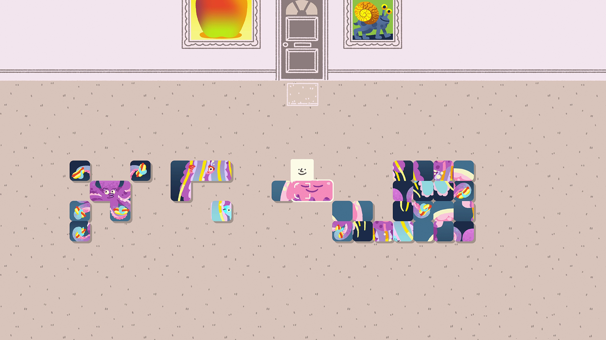

House House / Panic
Big Walk
Watch up to 1:32. Pause on one frame.
Look for: How do light, paths, and spacing help you find another person?
Open on YouTube ↗COMPOSITION & DEPTH · STUDENT RECAP
You already notice things.
Now explore how images help you notice.
No score. No submission. No pressure.
Try a visual idea ↗Just looking up a term?Same world. Different choices.
Every experiment is yours to try.
This guide supports our Composition & Depth topic from Wednesday, September 9. It works whether the vocabulary feels familiar or completely new. Explore any section, skip around, and come back when it helps. Nothing here is submitted or graded.
Composition + attention
A frame can contain many things. Your choices help a viewer decide what to notice first, next, and after that.
TRY IT Tap the three attention settings. The scene stays in place; the emphasis changes.
All elements are visible. Notice where your eye starts before changing anything.
Biggest does not always mean first. A small bright doorway can stand out against larger, quieter shapes.
In a game, hierarchy can help a player find a meeting place, notice a partner, or read an important object. Test that prediction with another viewer.
Choose a design above. The image will change so you can compare what it actually does.
Keep the scene quiet. The doorway competes quietly with the other shapes. Where did you look first? Keep this as your comparison.
Brighten the doorway. The doorway is lighter against its wall. Compare your first look with the quiet scene; this changes contrast, not position.
Highlight the friend instead. The blue friend gains emphasis. This is a useful competing design: when might noticing a partner matter more than noticing the exit?
Optional notes stay on this device when storage is available. No score or submission. Revising your prediction is useful progress.
Describe the visible change first. Then offer a reading. Different readings can fit; not every factual description fits the image.
Ready to explore · no scoreLeading lines
Edges, paths, gestures, and repeated shapes can suggest where to look. A line does useful work when you can explain what it leads toward.
TRY IT Redirect the path toward the friend or the door. Follow it with your eyes, then show the guide overlay.
The path aims toward the doorway. Compare its edges with the destination.
Not every line is a leading line. A decorative stripe may divide the image without guiding you to something meaningful.
Paths and environmental edges can suggest where a player could go. They do not guarantee the route is accessible or that every player will follow it.
Choose a design above. The image will change so you can compare what it actually does.
Point the path toward the doorway. The path edges lead toward the doorway. That gives the route a destination; it does not prove every player will follow it.
Point the path toward the friend. The route ends near the friend. Compare what it asks a new player to notice, without moving the people.
Show a guide over the doorway route. The dashed line describes one possible eye route. It is an explanatory overlay, not a record of where someone actually looked.
Optional notes stay on this device when storage is available. No score or submission. Revising your prediction is useful progress.
Describe the visible change first. Then offer a reading. Different readings can fit; not every factual description fits the image.
Ready to explore · no scoreNegative space + relationships
The area around and between subjects is part of the composition. Changing a gap can change a possible reading, even when the people stay the same.
TRY IT Move the distance slider. Describe what changes between the two people. More than one interpretation can be reasonable.
Nearer ← slide to explore → farther
The two people are separated by open space. What might that gap suggest?
Lots of space does not automatically mean loneliness. It could suggest freedom, scale, safety, anticipation, or separation, depending on context.
For a game about people needing each other, spacing might show an invitation to gather, a barrier to cross, or a person waiting for help.
Choose a design above. The image will change so you can compare what it actually does.
Bring them closer. The gap is small. It might suggest intimacy, crowding, or urgency. Which reading fits the story you would give this scene?
Leave some room between them. The gap leaves room for both figures. What can they do in that space? Compare with the closer version.
Move them farther apart. The larger gap can suggest distance or room to approach. What information would you need before calling it loneliness?
Optional notes stay on this device when storage is available. No score or submission. Revising your prediction is useful progress.
Describe the visible change first. Then offer a reading. Different readings can fit; not every factual description fits the image.
Ready to explore · no scoreThirds + balance
A three-by-three grid gives you positions to try. Centering a subject is also a choice. Ask what a placement communicates, not whether it earns a geometry score.
TRY IT Switch between center and thirds. Turn the grid on or off. Which arrangement supports your intention?
The blue friend is centered. The composition is one choice to compare, not a mistake to fix.
An off-center image is not automatically better. Symmetry can communicate stability, ritual, tension, or emphasis when the context supports it.
Use a grid as a way to generate alternatives. Then check the actual scene, screen size, and player task.
Choose a design above. The image will change so you can compare what it actually does.
Center the friend. The friend is centered. That can establish emphasis or symmetry. Centering is a usable choice, not an error.
Place the friend near a third. The friend moves toward the right third, opening space on the left. What might that space be for?
Show the thirds grid over that placement. The grid shows a compositional guide. Turning it on does not itself make the composition better; compare the frame with the grid hidden.
Optional notes stay on this device when storage is available. No score or submission. Revising your prediction is useful progress.
Describe the visible change first. Then offer a reading. Different readings can fit; not every factual description fits the image.
Ready to explore · no scoreDepth + depth of field
These two ideas are related, but they answer different questions. Spatial layers describe position. Depth of field describes the range of distances that appears sharp.
TRY IT Keep the objects fixed. Switch deep and shallow focus, then choose which layer is sharp.
All three layers appear sharp. The near plant, middle-ground friends, and far house still suggest distance.
Blurring the background does not move it closer or farther away. A flat image can suggest depth even when everything is sharp.
An engine's camera can keep a partner sharp and soften the surroundings, or preserve several distances so the player can read the environment. Choose for the information the player needs.
Choose a design above. The image will change so you can compare what it actually does.
Keep the near plant sharp. The foreground plant stays sharp. The friends and house soften; their positions do not change. What might the plant conceal or suggest?
Keep the friends sharp. The middle-ground friends stay sharp. The near and far layers soften. This directs attention through sharpness, not movement.
Keep the far house sharp. The background house stays sharp. Near objects still occupy the foreground even when soft. Position and focus are different.
Optional notes stay on this device when storage is available. No score or submission. Revising your prediction is useful progress.
Describe the visible change first. Then offer a reading. Different readings can fit; not every factual description fits the image.
Ready to explore · no scoreEstablishing + focal isolation
A view can tell us where a scene happens and how its parts connect. Another view can emphasize one person while leaving less context visible.
TRY IT Compare the whole place with a closer view. Then isolate the friend with light. What information becomes easier to notice, and what becomes harder to see?
The broad view shows the meeting place and a route to the doorway. It helps establish these relationships.
Wide and establishing are not synonyms. A wide view may fail to orient us; several closer views can sometimes establish a space.
Show a bridge, a partner, and a destination together when players need to understand their relationship. Isolate a character when their action matters most, while testing what context is lost.
Choose a design above. The image will change so you can compare what it actually does.
Show the place and the route. The wider view shows people, route and destination together. It reveals geography while making the face smaller.
Frame the friend more closely. The closer framing gives the friend more room in the image and hides part of the setting. What becomes harder to know?
Keep the frame; isolate with light. The frame stays wide while light and reduced competing emphasis isolate the friend. This changes attention without a closer crop.
Optional notes stay on this device when storage is available. No score or submission. Revising your prediction is useful progress.
Describe the visible change first. Then offer a reading. Different readings can fit; not every factual description fits the image.
Ready to explore · no scoreYOUR TURN · A TINY VISUAL STUDIO
Make one visual choice about two people sharing a place. You do not need a polished artwork, an engine, or the “right” answer for this small practice. For course production work, use a game engine or animation; these controls are a place to explore choices.
SVG is an image format you can open in a browser or many design tools. These are original practice illustrations, not screenshots from a game.
Ask them to look at your scene before reading your notes. “What might people do here? What in the image suggests that?” Listen, then change one thing. Different readings are useful information, not a verdict.
Notes stay in this browser when storage is available. They are not sent to Gordon or anyone else. Download a copy to keep them or move devices.
Viewer mode: look at the scene without the maker’s explanation.
A moodboard is a collection of chosen visual references for a project’s look, tone, and world. A useful reference has a job: “This spacing makes room for two players,” or “This palette keeps our meeting place readable.” Curation means choosing with a reason; cohesion means the choices feel like they belong together.
This optional guide is separate from the class assignment. Bring one visual idea and one question into Monday, September 14’s conversation if you find that helpful. Use the published course brief for assignment requirements and deadlines; this guide adds no assignment.
WATCH WITH ONE QUESTION
You do not need to watch everything. Pick a clip, pause when you notice a useful choice, and describe the evidence. Captions and playback controls are available in the video player.
House House / Panic
Watch up to 1:32. Pause on one frame.
Look for: How do light, paths, and spacing help you find another person?
Open on YouTube ↗Sony Pictures Entertainment
Try 0:00–3:00 of the opening. You can stop sooner.
Look for: Name what you notice first, then point to the feature that drew you there.
Open on YouTube ↗
Hollow Ponds & Richard Hogg / Finji
Watch the short trailer, up to 2 minutes.
Look for: How does arranging become something the player does, rather than something the player only looks at?
Open on YouTube ↗Videos load only when you choose Play and require internet. If playback is restricted, use the YouTube link. All visual experiments and definitions work without video. Screenshots: Big Walk © House House / Panic; Wilmot Works It Out © Hollow Ponds, Richard Hogg / Finji.
PLAIN WORDS · VISUAL EXAMPLES ONE TAP AWAY
This guide combines the session vocabulary with plain helper words for explaining what you see. It is a learning aid, not a new assessed glossary.
Open any term for its meaning and a place to try it.
The visible area of an image. Its edges decide what we can and cannot see.
See this idea in action →The order of attention among elements. Size, contrast, position, focus, and movement can contribute.
See this idea in action →A noticeable difference: light against dark, large against small, or still against moving.
See this idea in action →Visible or implied lines that guide attention through a frame.
See this idea in action →A direction suggested without a continuous drawn line, such as a person's gaze or a row of objects.
See this idea in action →The less occupied area around and between subjects. It does not have to be blank or white.
See this idea in action →How things relate through distance, position, direction, and overlap.
See this idea in action →A composition guide with two equally spaced vertical and two horizontal lines. You can test subjects near those lines or intersections.
See this idea in action →A matching arrangement of shapes or positions on either side of an imaginary line, like a mirror relationship.
See this idea in action →How attention feels distributed across an image. An image can feel balanced with matching sides or different shapes that hold attention together.
See this idea in action →How strongly an element attracts attention through its size, contrast, or how crowded it is.
See this idea in action →The sense of near and far. Overlap, size differences, and lines that converge into the distance can suggest depth in a flat image.
See this idea in action →A relatively narrow range of distances appears sharp; other distances look softer.
See this idea in action →A relatively broad range of distances appears sharp.
See this idea in action →In this context, image sharpness at a selected distance. Attention and optical focus are not the same thing.
See this idea in action →A shot that orients the viewer to a setting or to important spatial relationships. It is often wide, but its purpose defines it.
See this idea in action →A view that shows a relatively large area around its subject. This describes the view's scale, not necessarily its function.
See this idea in action →Choosing what appears inside the frame and how the edges contain or exclude it.
See this idea in action →Our course shorthand for making a focal character or object stand out through color, light, or position. It is an example of hierarchy, not a standard cinematography term.
See this idea in action →A curated collection of visual references that proposes the look, tone, and world of a project.
Connect it to your own scene →A selected group of colors and a plan for how they work together.
Connect it to your own scene →The sense that choices belong to the same world, even when they include intentional contrast.
Connect it to your own scene →Choosing and organizing references for a reason, rather than collecting everything you like.
Connect it to your own scene →Explaining why a choice belongs, with visible evidence and a connection to your intention.
Connect it to your own scene →Making, testing, and revising a choice using what you learned.
Connect it to your own scene →Letting someone describe what they see before you explain what you intended.
Connect it to your own scene →People contributing to a shared effort and depending on one another. In this assignment it is also the subject of the imagined game.
Connect it to your own scene →KEEP SOMETHING USEFUL
Open the guide on your phone or desktop. For unreliable Wi-Fi, keep the PDF on your phone and the complete offline edition on your computer.
The PDF opens in a normal PDF reader. For the HTML file, use a desktop browser; iPhone Files preview may not run its interactions. Browser offline storage can be cleared by the device, so keep the PDF as your dependable backup. Videos always need internet.
CTIN 290 · Gordon Bellamy · Composition & Depth, September 9, 2026. Original diagrams and practice activities created for this guide. Adapted from the course session plan and terms sheet; designed with AI assistance and prepared for instructor review. No learner analytics, accounts, grades, or submissions.
Adobe: composition reference (photography examples) · StudioBinder: establishing shots
“Blue Lock (visual)” is local course shorthand. It is not presented as a universal film term. Examples suggest possible readings; a still image does not prove how every player will behave.